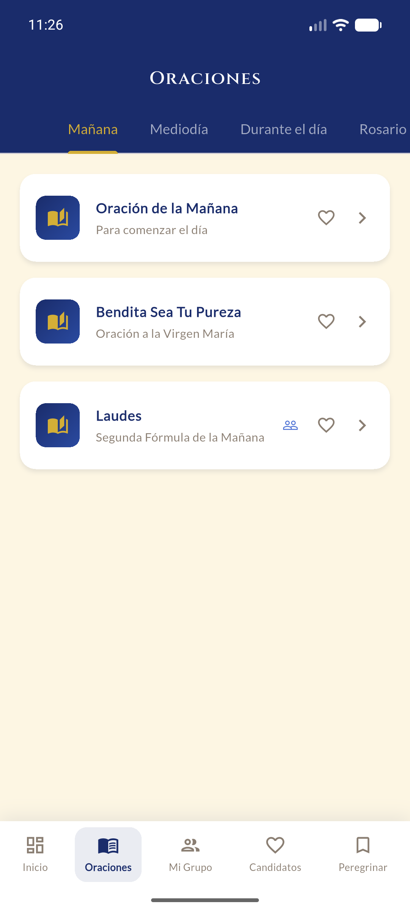
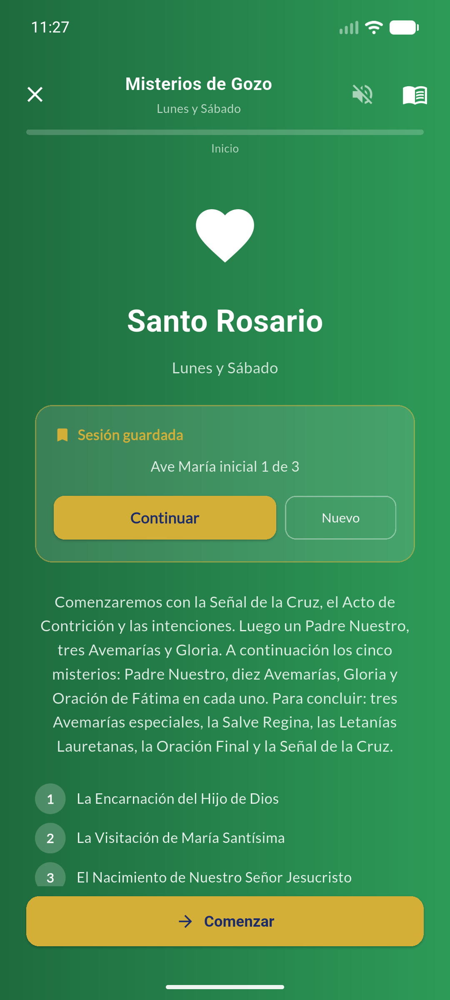
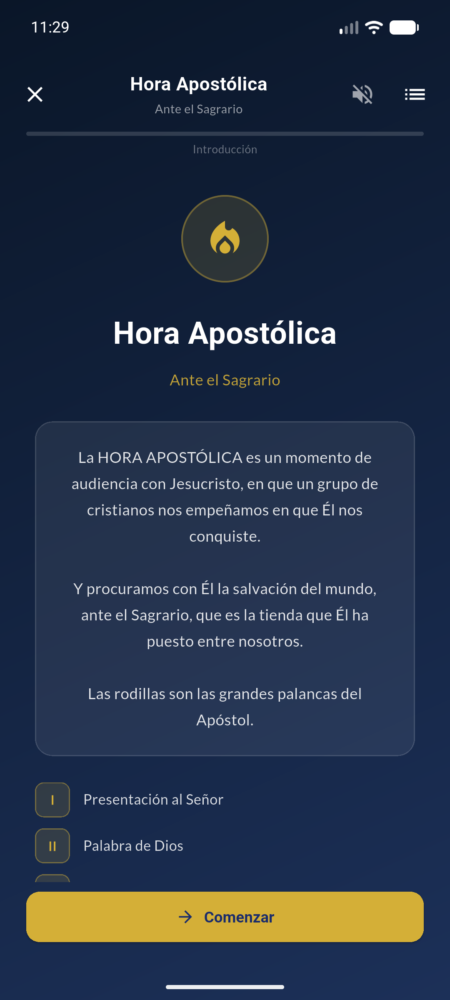

¿Sientes que la llama
se está enfriando?
El Cuarto Día es el más largo — y el más solitario. Peregrino APP te acompaña cada día con tu Trípode, tus oraciones, tus candidatos y tu Reunión de Grupo. Siempre en el bolsillo.
🚀 Lanzamiento oficial: Mayo 2026
Consigue tu pase anticipado en nuestro canal:
Unirme al Canal de WhatsApp →Gratuita · Sin anuncios · Para Android
Hecho por y para el Movimiento de Cursillos de Cristiandad
El Cuarto Día tiene sus trampas
La llama no se apaga de golpe — se va enfriando de a poco. Peregrino APP existe para cada uno de esos momentos.
"¿Por quién iba a rezar esta semana?"
Tus candidatos, siempre presentes
La sección de Candidatos en Oración guarda las personas de tu ambiente para que no las olvides. Reza por ellas con un solo toque.
"Llego a la reunión sin haber revisado mi semana…"
Tu Trípode digital, día a día
Registra tu Piedad, Estudio y Acción cada día. Cuando llegue la Reunión de Grupo, tu semana ya estará anotada.
"Perdí mi librito de oraciones de bolsillo…"
Todas las oraciones del Movimiento
Mañana, mediodía, el Ángelus, el Rosario, la Vía Crucis, la Hora Apostólica. Todo en un solo lugar, siempre disponible.
Tu Trípode del Cuarto Día
Piedad, Estudio y Acción: los tres pies que sostienen al cursillista. La app te ayuda a crecer en los tres, cada día.
Piedad
Tu relación personal con Dios: oraciones de mañana y mediodía, el Ángelus, el Rosario, la Misa. El primer pie del Trípode.
Estudio
El conocimiento de la fe: Biblia, doctrina, formación cristiana. Registra qué has leído o aprendido esta semana para tu reunión de grupo.
Acción
El apostolado en tu ambiente: el testimonio diario, las obras de caridad. Lleva un registro de tu impacto concreto en los demás.
La función que
más importa:
tus candidatos
A veces el día a día nos hace olvidar lo importante: las personas que queremos. Peregrino APP es un espacio para poner nombre a tu oración y cuidar, desde el silencio y el cariño, el proceso de aquellos que buscan un encuentro con Dios.
El ciclo del Peregrino
Cuatro momentos, un mismo camino. Peregrino APP te acompaña en cada uno de ellos.
Cada mañana
Abre la app, reza la Oración de Mañana y marca tu trípode del día.
Durante el día
Reza el Ángelus al mediodía. Lleva en oración a tus candidatos mientras vives tu apostolado.
Al caer la tarde
Reza el Rosario guiado con tus misterios del día, o vive la Hora Apostólica ante el Sagrario.
En la reunión
Abre el Trípode semanal y la Guía de Reunión de Grupo. Todo preparado y a mano.
Todas las oraciones del Movimiento
Desde el Ángelus hasta la Hora Apostólica ante el Sagrario. Siempre disponibles, sin internet.

Oraciones por momento
Mañana, mediodía, tarde. Cada oración en su momento, organizada para tu día.

Santo Rosario completo
Con los 5 misterios del día, sesión guardada, guía paso a paso y modo dialogado.

Hora Apostólica
42 pasos ante el Sagrario. La herramienta más potente para el apostolado en grupo.
Qué dicen otros cursillistas
La fe y la constancia se contagian. Estas son voces reales del Movimiento.
"Gracias a la app, mi reunión de grupo volvió a tener sentido. Llego con mi trípode de toda la semana y ya no improviso."
"Tengo a cinco personas de mi trabajo en la lista de candidatos. Cada día rezo por ellos por su nombre. Nunca lo había hecho con tanta constancia."
"El Rosario guiado me ayudó a retomarlo después de años. El hecho de que me diga el misterio del día y me guíe paso a paso hace toda la diferencia."
"Recomiendo Peregrino APP a todos los cursillistas de mi comunidad. La Hora Apostólica en la app es una herramienta extraordinaria para los grupos."
"Uso la Guía de Reunión en la pantalla en lugar del papel. Los cuatro puntos siempre a mano. El grupo lo agradece."
"Cuando marqué 'Fue a un Cursillo' para mi hermana, me emocioné. Llevaba tres años rezando por ella. Esta app me acompañó en todo ese camino."
El fuego se cuida mejor cuando lo compartes.
Envía esta página a tu grupo, a tu Ultreya o a cualquier cursillista que sientas que lo necesita. A veces una herramienta pequeña ayuda a alguien a volver a empezar.
Esta app llega
a donde tú no puedes ir
Cada vez que un cursillista abre Peregrino APP en Buenos Aires, en Manila o en Madrid, el Movimiento llega un poco más lejos. Esta herramienta existe gracias al trabajo y al sacrificio de una familia que cree que la fe merece las mejores herramientas del siglo XXI.
Si quieres ser parte de eso — si te importa que la llama del Cuarto Día no se enfríe — únete como Peregrino Colaborador y desbloquea funciones exclusivas dentro de la app. Tu aportación no es un donativo anónimo: es apostolado digital.